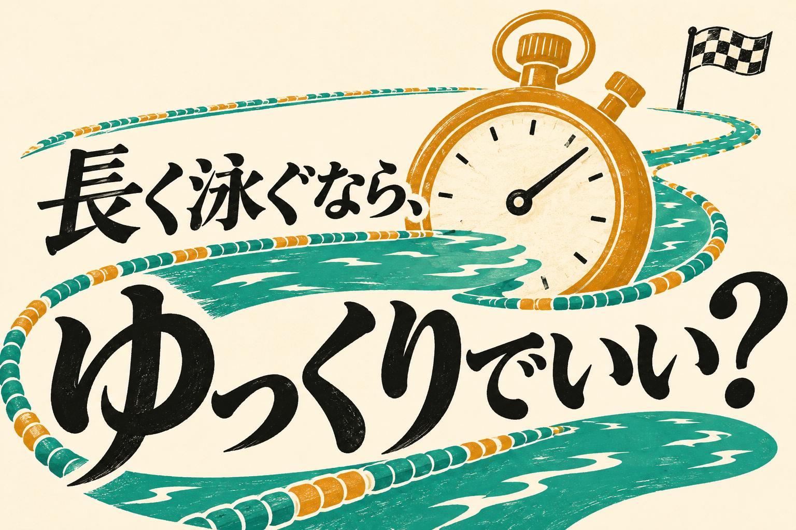
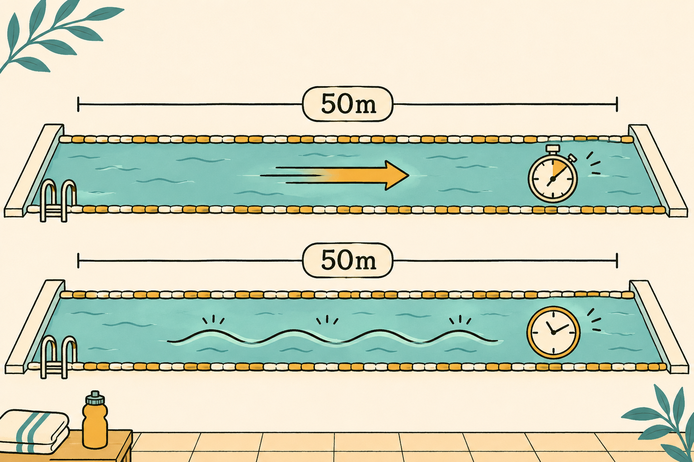
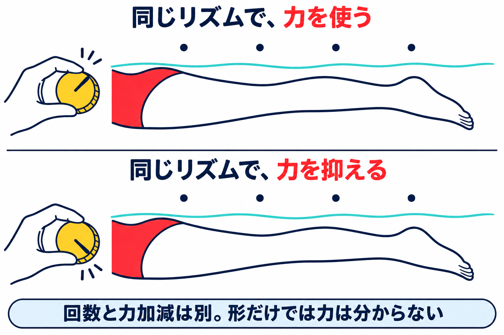
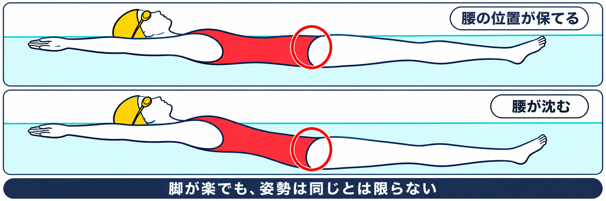
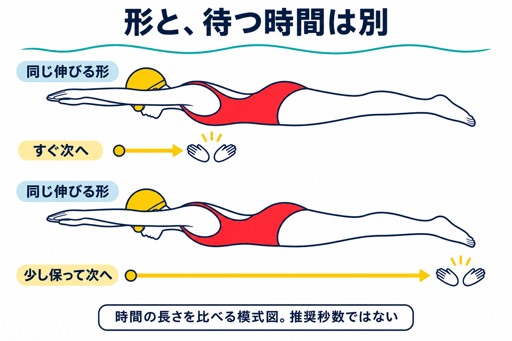
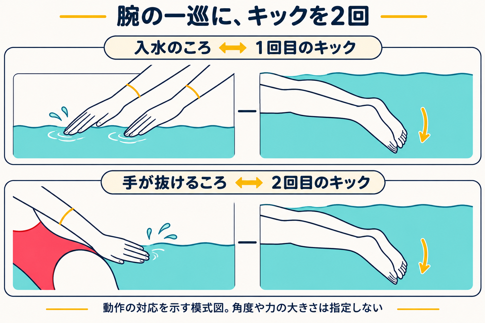
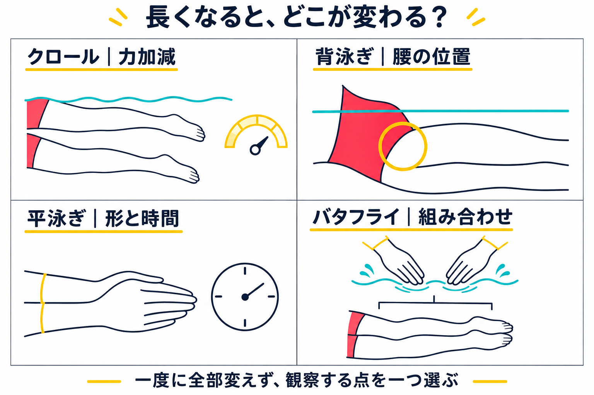

距離が伸びると、泳ぎ方はどう変わる？ 四泳法の100mと200mを比べる

25mなら気持ちよく泳げるのに、もう25m続けると、急に一かきが重い。そんなときは、腕がゆっくりになったのか、腕の動き一巡で進める距離が短くなったのかを分けると、どこで泳ぎが変わったかが見えてきます。
競技の100mと200mでは、四泳法とも200mの決勝組の方が腕のテンポは低く、1周期で進む距離は長めでした。ただ、どこを見るとその違いが分かりやすいかは泳法によって変わります。ここでは50mプールの競技データを比較し、最後に普段の練習で見られる形に置き換えます。
比べるのは、腕のテンポと一巡で進む距離
前回の「ストロークレートとは？」でいう「テンポ」は、腕の動きが1分に何巡するか。クロールや背泳ぎは、右手が入って次に右手が入るまでが1巡です。「一巡の距離」は、その間に体が前へ進んだ長さです。歩くときに「足を出すテンポ」と「一歩の幅」を分けるのと同じです。

Bornらは2021年の欧州長水路選手権の決勝選手を種目別に比較しました。テンポは各50mの15m付近と35m付近で計測し、前者は浮き上がって腕を一度動かした後。水面泳速は各50mの15〜45mで計りました。表の数字はレース全体のタイムや個人の目標値とは用途が違います。研究の方法と結果
100mは短い側、200mは長い側として比べます。「200mの平均テンポが低い」は別の決勝組を比べた結果です。同じ選手が最初からテンポを落としたのか、後半で落ちたのかを、この表だけで判定することはできません。
クロール｜腕のテンポと脚の力加減
クロールの100mと200m
| 種目 | テンポ | 一巡の距離 | 水面泳速 |
|---|---|---|---|
| 男子 100m | 50.9 | 2.34 | 1.98 |
| 男子 200m | 43.4 | 2.51 | 1.81 |
| 女子 100m | 49.1 | 2.17 | 1.77 |
| 女子 200m | 43.7 | 2.25 | 1.64 |
男子の例では、200mの決勝組は100mより一巡で17cm長く進みました。それでも、腕のテンポが約7.5周期／分低く、水面の速さは1.98から1.81m／秒へ。25mのときと同じ勢いを長く保てるか考えるなら、腕が回るかに加え、その一巡でどれだけ進めているかも見ます。

もっと長い距離では、テンポの読み方が変わります。Stauntonらが欧州短水路選手権の自由形選手324人を調べたところ、女子800mのレース中に測った区間では、腕のテンポが高い測定ほど水面泳速も高い傾向がありました（相関 ρ＝0.45）。これは800mの出場者の中での比較。100mと200mの決勝組の比較とは問いが異なります。Stauntonらの原著
米国のUSMSの指導例では、短いレースではキックを積極的に使い、長いレースでは残りの距離に合わせて力を配分します。練習で見るなら、脚の力を少し抑えたとき、呼吸の余裕と腕のリズムが残るか。レース分析ではキックの強さを測っていないので、この配分は試して判断する選択肢です。USMSのクロール指導
キックの回数と力の配分は別
説明用の模式図
背泳ぎ｜水面の腕とターンを分ける
背泳ぎの100mと200m
| 種目 | テンポ | 一巡の距離 | 水面泳速 |
|---|---|---|---|
| 男子 100m | 49.7 | 2.15 | 1.77 |
| 男子 200m | 41.4 | 2.35 | 1.62 |
| 女子 100m | 48.1 | 1.97 | 1.58 |
| 女子 200m | 41.1 | 2.18 | 1.48 |
女子の例では、100mは48.1周期／分、200mは41.1周期／分。200m組の方が一巡で21cm長く進みました。背泳ぎで50mごとのラップだけが遅くなったら、腕のテンポが変わったか、ターン前後に時間がかかったかを分けて見ます。
背泳ぎのラップは、壁際も含む

Marinhoらは別大会の2018年欧州選手権で、男女四泳法の100m・200m決勝128枠の映像を分析しました。壁の5m手前から、ターン後に壁から15mの地点へ達するまでをひと区間として計ると、四泳法・男女とも種目間で差がありました。水面で腕を計る区間と、壁を含むラップが違う数字になる理由です。Marinhoらの原著
USMSは長い背泳ぎで、前半のキックを少し軽くし、後半へ力を配分する方法を紹介しています。脚を軽くしたときに腰や入水の位置が変わるかも見ると、どこを見直すべきか絞れます。競技データからキックの最適な力は決まりません。USMSの背泳ぎ指導
脚の力を変えた時、腰はどうなる？
説明用の模式図
平泳ぎ｜伸びる形と、次の一かきまでの時間
平泳ぎの100mと200m
| 種目 | テンポ | 一巡の距離 | 水面泳速 |
|---|---|---|---|
| 男子 100m | 55.2 | 1.75 | 1.60 |
| 男子 200m | 35.7 | 2.51 | 1.48 |
| 女子 100m | 48.6 | 1.79 | 1.43 |
| 女子 200m | 35.8 | 2.27 | 1.34 |
男子の例では、100m組は1分に55.2周期で、一巡1.75m。200m組は35.7周期で、一巡2.51mです。「回数×一巡で進む距離」で考えると、丸めた平均からの計算例は約97m／分と約90m／分。実際に別の区間指標で測った平均泳速も、100m組の1.60m／秒（約96m／分）に対し、200m組は1.48m／秒（約89m／分）でした。200m組は一巡で長く進んでも、テンポとの差を合わせて見ると、水面での速さは低い例です。

短いレースで次の一かきが早くても、手足が伸びてそろう瞬間は作れます。長く泳ぐときは、その形からいつ次を始めるかに注目します。映像で両手が前に伸びた瞬間に印をつけると、形ができたかと、そこでどのくらい時間を使ったかを見分けられます。一巡の長さやレートだけでは、実際に伸びていた時間は分かりません。USMSの平泳ぎ指導
伸びる形と、その時間を分ける
説明用の模式図
バタフライ｜一巡の速さと、手足が合う瞬間
バタフライの100mと200m
| 種目 | テンポ | 一巡の距離 | 水面泳速 |
|---|---|---|---|
| 男子 100m | 56.1 | 1.98 | 1.84 |
| 男子 200m | 49.8 | 2.03 | 1.68 |
| 女子 100m | 56.4 | 1.74 | 1.63 |
| 女子 200m | 51.6 | 1.75 | 1.50 |
女子の例では、100m組の56.4周期／分に対し、200m組は51.6周期／分。一巡の距離は1.74mと1.75mで、表の平均では近い値でした。短い側と長い側で腕のリズムが違っても、キックを減らしたか、手と脚のタイミングを変えたかは、この数字からは分かりません。

USMSの指導例では、手が水に入るころと、水から出るころにキックが重なるようにします。長い距離に向けた観察なら、後半にも同じ合図で脚が動いているか。たとえば腕を戻しづらくなった場面で手が水を出る瞬間を止めると、テンポの数字では見えなかった手足のずれを確かめられます。呼吸は普段どおりに続けます。USMSのバタフライ指導
腕が一巡する間に、キックは2回
↓
次に両手が入るまで＝腕の1周期
この一巡に、両脚をそろえるキックが2回。
左右の脚を別々に数えて「2回」ではありません。
目印にする場面：手が入るころ／手が水から抜けるころ。正確な時間差や、すべての泳者で一致する瞬間を示す図ではありません。
自分の泳ぎでは、どこから変わったかを見る

距離を増やす前に残したいもの
説明用の模式図
競技と同じ100m・200mを泳がなくても、余裕を持って泳げる距離で確かめられます。例えば50mを続けて泳げるなら、前半と後半から壁を離れた直後を避けて、同じ長さの水面区間を選びます。安全に計れる環境で、区間タイムと腕のテンポを取り、気になった動きを一つだけ横に書きます。
クロールならキックの力と呼吸、背泳ぎなら腰の位置や壁からの浮き上がり、平泳ぎなら手足がそろってから次を始めるまで、バタフライなら入水・出水付近の脚。最初から100mと200mで配分を変えることと、一本の中で動きが崩れていくことは別の観察です。
冒頭の「一かきが重い」に戻りましょう。後半も腕のテンポは同じで、同じ水面区間に時間がかかっていたなら、一巡で進む距離を見直す手がかりになります。腕のテンポも落ちていれば、どちらが先に変わったのかを映像で追えます。「長いと崩れた」が「どこで何が変わった」に変わると、次の一本で確かめることが決まります。